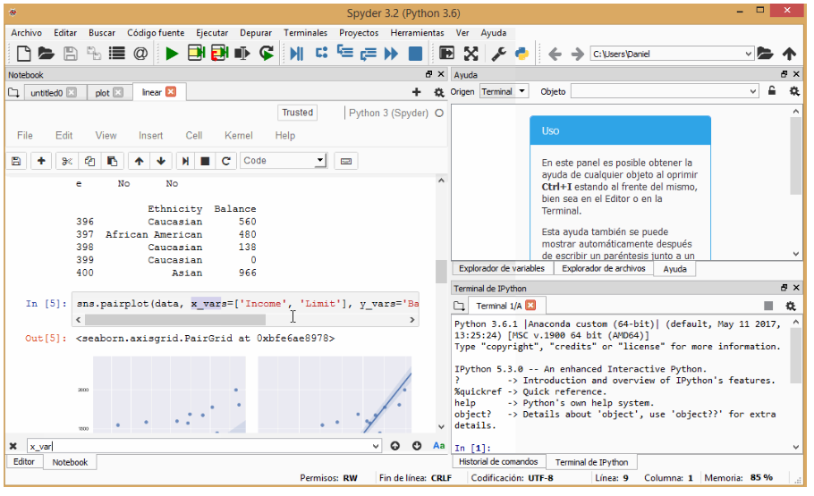

Jupyter Notebook ecosystem {#jupyter}¶
Language support: kernels¶
The Jupyter system supports over 100 programming languages (called “kernels” in the Jupyter ecosystem) including Python, Java, R, Julia, Matlab, Octave, Scheme, Processing, Scala, and many more. Out of the box, Jupyter will only run the IPython kernel, but additional kernels may be installed. Language support continues to be added by the open source community and the best source for an up-to-date list is the wiki page maintained by the project: https://github.com/jupyter/jupyter/wiki/Jupyter-kernels. These projects are developed and maintained by the open source community and exist in various levels of support. Some kernels may be supported by a vast number of active (and even paid) developers, while others may be a single person’s pet project. When trying out a new kernel, we suggest exploring a kernel’s community of users and documentation to see if it has an appropriate level of support for your (and your students’) use.
Jupyter’s kernel flexibility allows instructors to pick the right language for a particular context. For example instructors may use Python to teach programming, while switching to R to teach statistics, and then perhaps Scala to teach big-data processing. Regardless of the language chosen, the Jupyter interface remains the same. Thus, some cognitive load can be lessened when using multiple languages within or across courses (e.g., the user interface stays the same between the student’s Digital Humanities and Biology courses). Students often appreciate consistent use of the same language within a course, however.
Using Jupyter notebooks¶
When using Jupyter notebooks on the data projector or large screen monitor in the classroom, we recommend giving the students specific instructions on the meaning of the user interface of the notebook. It is not exactly intuitive.
The first and most salient component of the notebook is the cell. Indeed, the entire contents of a notebook is composed of only cells. These cells can take one of two forms: text or code. We will descibe the authoring of a notebook in the following section; however, here we identify some of the subtle, yet important components of a code cell.
Code cells are composed of three areas: the input area, the
display area, and the output area. The input area is identified by
the In []: prompt to the left of the cell. Between the brackets of
the In prompt can be one of three items: a number, an asterisk, or a
blank. A number indicates that this cell has been executed and the
value of the number indicates the order of execution. For example,
normally, after you execute the first cell after opening a notebook,
its prompt will read In [1]:.
<strong>Pro Tip</strong>
When teaching with notebooks, you often will want to refer to a cell
my name. You could refer to a cell by its input prompt
number. However, keep in mind that this number will change if you
excecute the cell again, or that students may have different numbers
if they, too, are executing their own copy of the notebook. A better
way of referring to a cell may be to refer to the text right above the
cell as that won't change while you execute cells. For referring to
lines of code, see the following section on Tips and Tricks.
Before executing a cell, the input prompt number area will be
blank. Therefore, you can tell at a glance that that cell has not been
executed yet. It may also be the case that if an input prompt does
have a number in it, then the cell has been run in the past. However,
the cell may not have been run during this session, and thus the
output may be showing old results. We recommend running from the menu:
Cell, All outputs, Clear at the beginning of a
presentation. That initializes all cell inputs to the blank state.
During the execution of a cell, the input prompt will contain an
asterisk. If it seems that too much time has passed and you still see
In [*]: your code may be in an infinite loop, or you have lost
communication with the kernel. You may have to interrupt or restart
the kernel. This is discussed below.
Finally, it is important to keep separate the display and output areas
below the input cell. The difference between these two areas is subtle
and confusing, but is very important in some instances. The display
area is reserved for any item that code has produced for viewing. That
includes simple text (i.e., print("hello, world")) or figures from a
plot. The output area is reserved for items that the cell “returns.”
This is why in many notebooks you may see a variable assignment
followed immediately by the variable, like this:
x = 2434 + 33476
x
In this example, you wouldn’t actually see the value computed unless you print it to the display area, or return the value. Here, we return it as the last value of the cell.
Keep in mind that the bottom portion of the notebook on the screen or
monitor may not be visible to students in the back of the room. Make
sure that the font size is large enough, and that you don't go too fast
when demonstrating code that students don't have access to. We also
recommend that you hide the Jupyter toolbar and header to get more
room for the actual notebook (select `Toggle Header` and `Toggle View`
under the Jupyter `View` menu).
Tips and tricks¶
Reminders¶
If you are using a single notebook as a standalone exercise in a traditional class (i.e., this is the only computational component of your class), then it is helpful to have a few cells at the top of that notebook that reviews how to navigate through the notebook and how to insert cells, etc.
Feedback¶
How do we get feedback from students in an interactive session to see if students have completed an exercise?
A low tech solution is to give students sticky notes of different colors, one meaning “finished” and one meaning “need help”, that they can stick on the back of their computers. The instructor can then quickly look up to take a survey of the state of the class and decide how to proceed.
Projecting Slack or a similar chat group on a screen and having student copy-paste solutions (provided they are short functions) is a nice way to let everyone in the class see one another’s solutions. A positive aspect of having multiple student solutions projected is that it can show the variety of ways to solve a problem. This gives an opportunity to talk about the readability of solutions and their efficiency. A downside is that in a large class, the sheer volume of posts can make it overwhelming. Instead polling can be used to aggregate student answers and provide some form of feedback to the instructor. Nbgrader or travis-CI can also be options here, requiring students to submit completed code where it is assessed automatically. These will however require more setup and can take some time to complete.
Explaining each cell¶
Consider moving the comments for a code block into a markdown cell either directly above or below the code cell. Comments in a markdown cell often read much better and give you more flexibility in discussing or describing the code. However, short comments in a block of code can still be useful.
How to structure code cells¶
How much code should you put in a cell? You will develop your own style of writing noteooks with experience. Typically, you will want to keep the number of lines low so that it is easy to follow, and you can have useful comments above the cell. However, we recommend putting code that “goes together as a meaningful unit” into a single cell. For example, if you have lines of code that are highly dependent on each other, then you might want to put them together. As an example, consider two lines of code: one that opens a file, and the second that reads the data from the file. It is probably a good idea to put those into the same cell so that they are always executed together. Otherwise, the student may encounter errors if they execute cells independently a second time (e.g., there are no more data).
Specifically, messing up the dependencies between cells is where most of the confusion using notebooks comes from with new users. For example, if you change a variable’s name (without restarting the notebook), then the following code cells may continue to use the old variable’s name (and value). Later, when running the notebook again, the notebook may fail in unexpected ways because the old variable no longer exists. This is sometimes referred to as “the hidden state problem.” This is an open research problem, and researchers are exploring various possible solutions. For example, trying searching the internet for “jupyter dependency graph” or “jupyter dataflow notebook.”
<strong>Pro Tip</strong>
You can easily split a cell into two parts at the cursor using the
keystroke `CONTROL` + `SHIFT` + `-`. You can also merge multiple cells
with `SHIFT` + `m`. Both of these are also available from the menu
under `Edit`.
On the other hand, it is often a useful idea to separate lines of code where you want to provide the student a place to interactively add cells, and examine the state at that particular point in the process. Asking probing questions in a Socratic method is a very useful technique for engaging the reader and encouraging them to become more than a reader. Students do not naturally know to insert cells and explore items in a notebook. You will need to explicitly teach this skill. In fact, teaching students how to effectively weave code into their own notebook stories is an important component of teaching with notebooks.
Custom styling¶
New notebook creators often try to centrally manage the formatting of headings, equations, and other textual items. For example, rather than using a standard markdown heading, a creator may over-design the headings by using HTML styles. This may create two problems:
The rendering of the notebook markdown may change and your formatted HTML header may not maintain the same look over time.
Headers created using markdown can be used by notebook tools, such as automatically creating a Table of Contents.
Our recommendation is to resist the desire to customize the styling and simply use the default representations. If you want to do customization (for example if you want to color certain cells) you can use CSS.
Length of notebooks¶
Notebook authors sometimes make the notebooks very long with many topics and sections. Notebook sections and cells are currently not easily reused in a copy/paste sense for mixing intra-notebook content. Until this functionality is available, we recommend that authors make short, self-contained notebooks around short topics. This allows other notebooks authors to mix and match notebooks to create curriculum.
Gotchas¶
Programming language \(\neq\) Jupyter¶
Teaching a class entirely with Jupyter can give the sense to students that this is the way all computational exploration is done. In particular, students can be confused into thinking that programming requires the notebook, instead of understanding that a notebook is just one way to interact with a particular language. This point should be made clear periodically. A good way to reinforce this is to show how to take a function that has been developed and debugged in a notebook and cut-paste it into a script (such as a file ending in .py for Python) and then import it into the notebook to regain that functionality. Also, the Integrated Development Environment (IDE), Spyder, has a plugin (https://github.com/spyder-ide/spyder-notebook) that allows notebooks to be displayed alongside Python scripts and a python terminal which can be useful for showing this dichotomy.

Restart, restart, restart…¶
Often, students may need to stop a computation, and this can be accomplished by pressing the “Interrupt” button in the toolbar. However, students should also be made aware of how to restart the kernel in a notebook, and what this means. There are several instances when students might need to do this. Sometimes students write code that can go into an infinite loop. The visual cues that notebooks give in this case are subtle, and students may not realize this and don’t understand why the notebook is non-responsive. In live-coding situations, it can be useful to demonstrate this to students and show them how to restart the kernel and carry on.
A second instance of where restarting a kernel might be needed is due to how the notebook stores the state of the computation. We like to think that, since the notebook is laid out in a linear fashion, that the state will always reflect what would happen if the notebook was run from the start up to that point. However, it is common to work in a notebook out of order, for instance if students ask a question about some previous example. If the variable has been changed in subsequent cells, then its value might not reflect what you expect when you rerun a cell earlier in the notebook. Restarting the kernel is sometimes the only solution.
Notebook hygiene {#notebook-hygiene}¶
Many gotchas can be mitigated by developing notebooks that will be robust to incremental and non-linear execution. The main principle is to minimize side-effects of executing a cell and manifests itself somewhat differently in different languages; our suggestions here will be relevant to Python and may need to be adapted for other languages. Notebooks should generally be able to execute sequentially, such as via “restart kernel and run all cells”. (An exception is when a notebook is intentionally incomplete for the purpose of live coding or student exercises, see nbgrader or the exercise estnations for more elegant ways to handle this.) Variable mutation is the most common way in which a notebook may malfunction when executing cells in a non-linear way (e.g., in response to student questions or when comparing and contrasting different methodologies). Sometimes this mutation is incidental, through dummy variables that were not meant to have significance outside the scope of the cell in which they are used. Their scope can be limited by placing them in a function, even if that function is only called once. Redefinition of functions can often be avoided by parameterizing the desired functionality as would typically be done if designing a library (though this may be a distracting software design for novice programmers). Function definitions should have little or no dependency on variables from their enclosing scope. When modifying cells for demos and formative assessments during class, it is useful to either copy the cell or modify/execute such that a conforming implementation remains present when moving on to other cells where it may be used. Additionally, you can minimize these issues by grouping code in a single cell that should always be executed sequentially, because code within a cell will always be sequential.